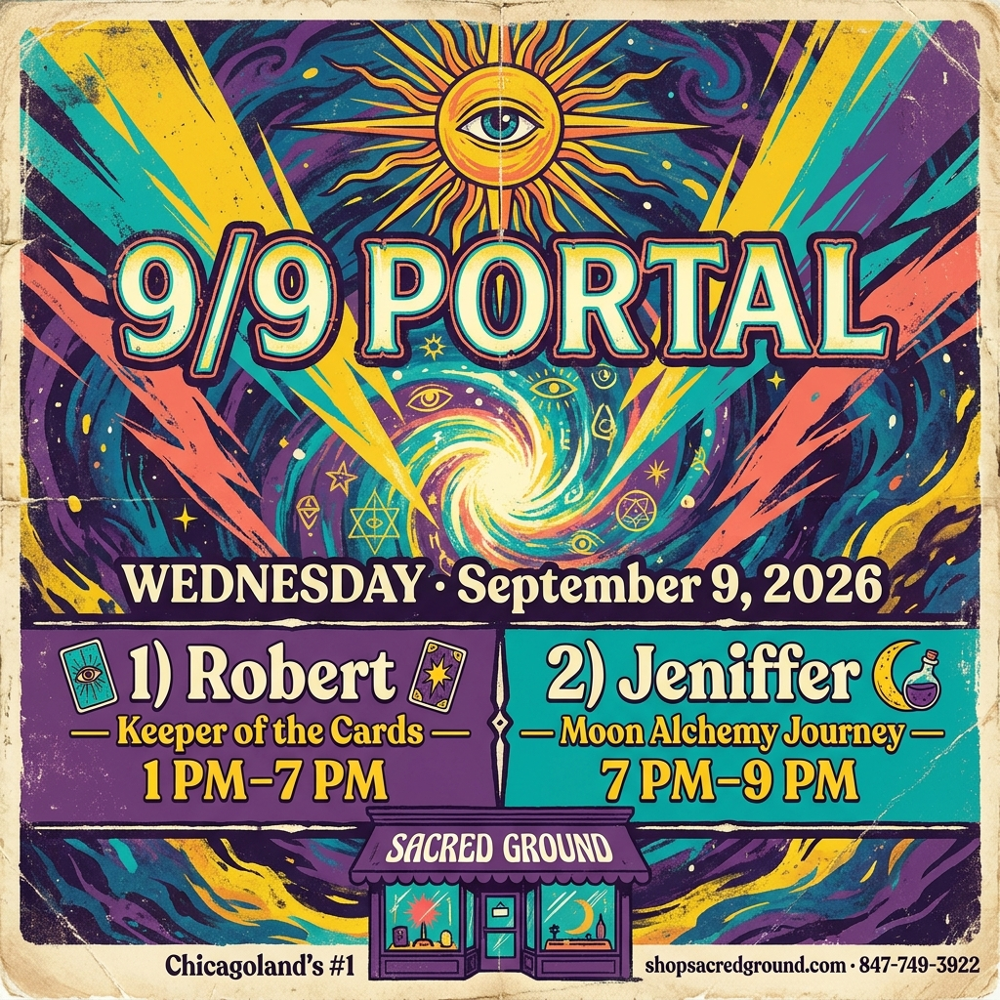
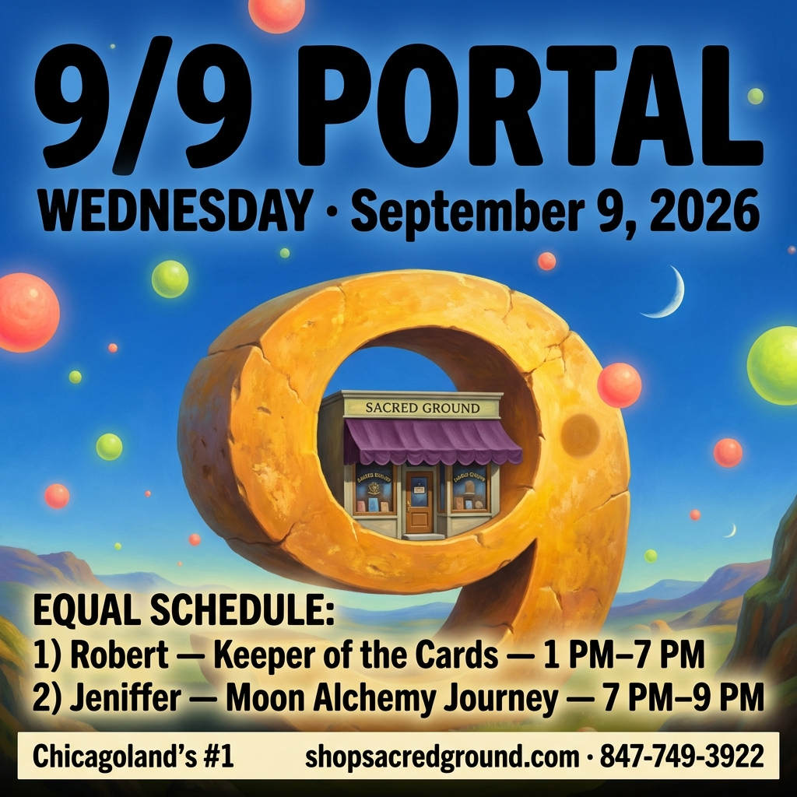
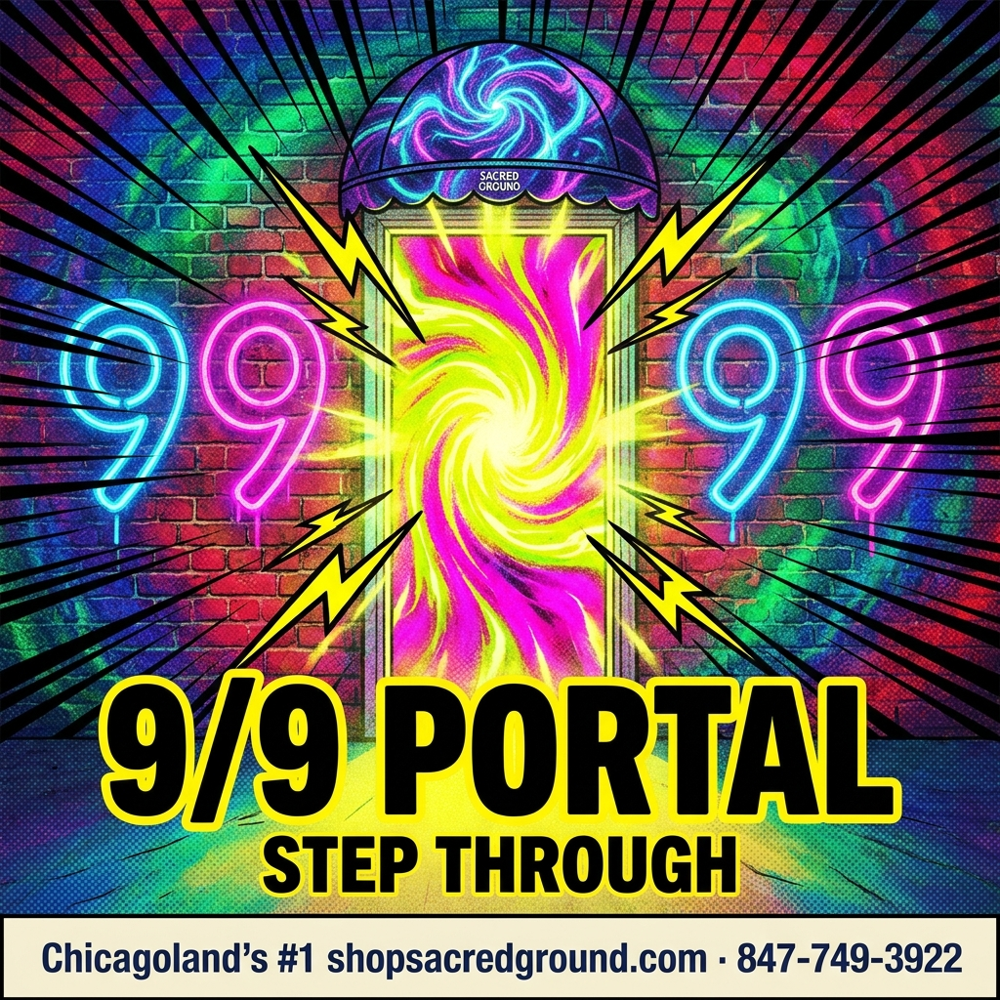
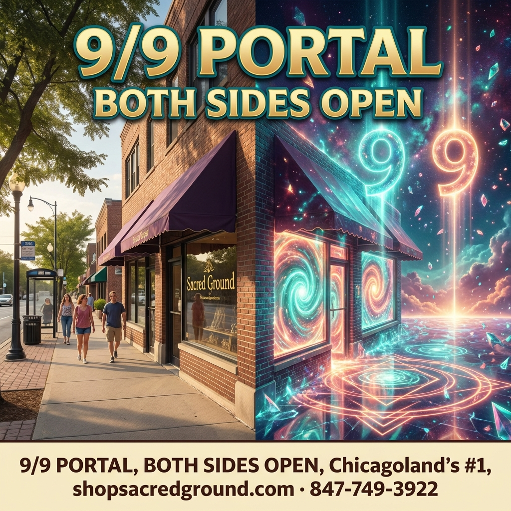

9/9 Portal · round 2 (wilder)
Ditched the boring cosmic-vortex look. Night still Virgo. Nothing published — pick morning + afternoon.

MORNING · Hollywood blockbuster
media 28027
MORNING · Magritte giant-9 tunnel
media 28028
AFTERNOON · pop-art neon
media 28029
AFTERNOON · mirror worlds
media 28030